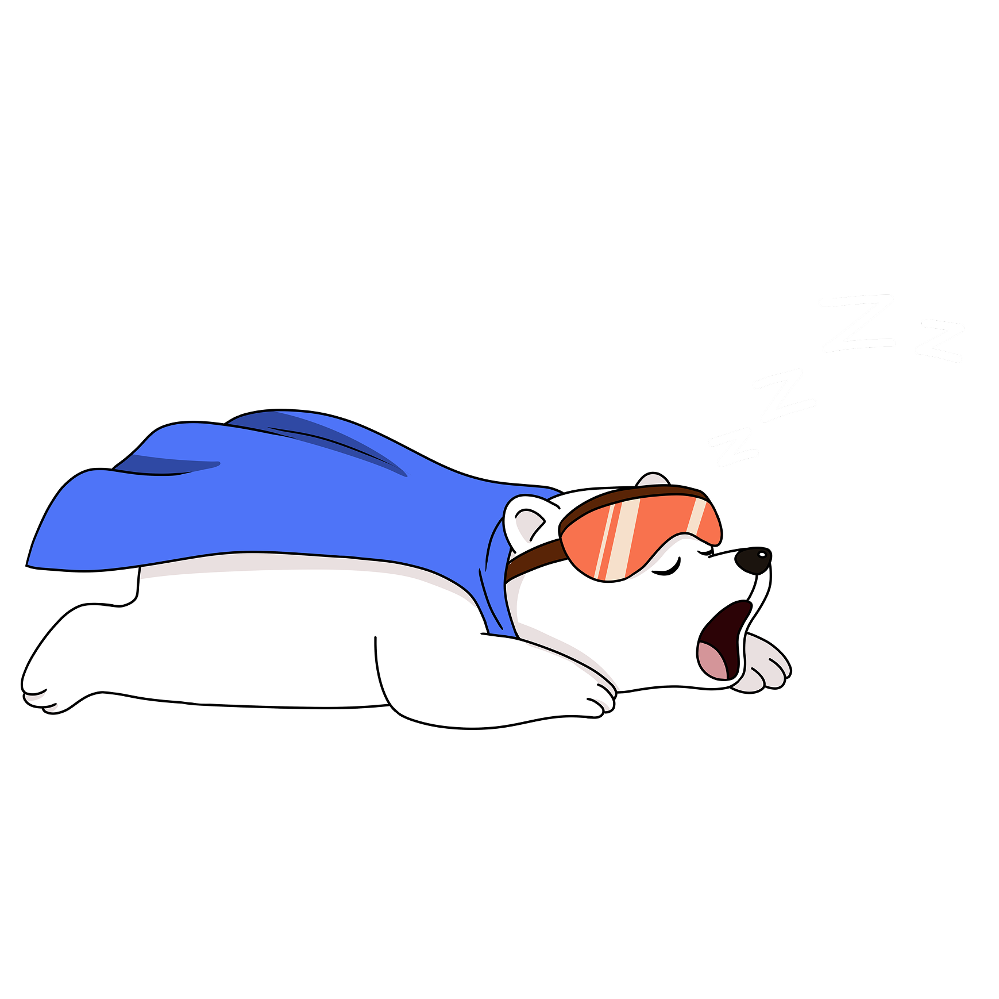

7 incident scenarios. Zero AI assistance.
Find out how much muscle memory you've lost since you started letting copilots think for you.
This diagnostic is inspired by Bainbridge's Ironies of Automation — the more you automate, the worse you get at the exact moments automation fails.
Read the Full Article →